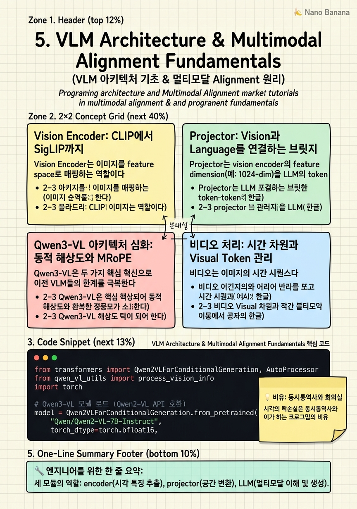

VLM Architecture & Multimodal Alignment Fundamentals

🎯 학습 목표
- Vision Encoder, Projector, LLM 각 모듈의 역할과 상호작용을 설명할 수 있다
- Qwen3-VL의 동적 해상도(Dynamic Resolution)와 Naive Dynamic Resolution의 차이를 설명할 수 있다
- MRoPE(Multimodal Rotary Position Embedding)가 필요한 이유를 설명할 수 있다
- Visual token compression 기법들의 trade-off를 설명할 수 있다
- Post-training 관점에서 어떤 모듈을 freeze하고 어떤 모듈을 훈련해야 하는지 결정할 수 있다
Vision-Language Model(VLM)은 텍스트만 처리하는 LLM에 시각 정보를 이해하는 능력을 추가한 모델이다. 핵심 구조는 세 모듈의 연결이다: (1) Vision Encoder — 이미지/비디오 프레임을 feature vector로 변환한다. (2) Projector — vision feature를 LLM의 token embedding space로 변환한다. (3) LLM — visual token과 text token을 함께 처리하여 응답을 생성한다.
이 구조는 단순해 보이지만 실전에서는 여러 설계 결정이 성능에 큰 영향을 미친다: 어떤 Vision Encoder를 사용하는가, Projector 아키텍처는 무엇인가, 이미지를 몇 개의 visual token으로 변환하는가, 해상도를 어떻게 처리하는가, 비디오의 경우 시간 차원을 어떻게 인코딩하는가.
Qwen3-VL은 이러한 설계 고민의 최신 구현체로, 동적 해상도 처리와 MRoPE를 통해 고해상도 이미지와 장시간 비디오를 효율적으로 처리한다. Post-training에서는 각 모듈을 선택적으로 freeze하거나 훈련하는 전략이 성능에 결정적이다.
핵심 내용
Vision Encoder: CLIP에서 SigLIP까지
Vision Encoder는 이미지를 feature space로 매핑하는 역할이다. 가장 흔히 사용되는 기반 모델은 CLIP 계열이다. CLIP은 대규모 image-text 쌍으로 contrastive learning을 통해 vision representation을 학습했다.
Gemma-3, LLaVA, Qwen2-VL 등 많은 VLM이 ViT-based vision encoder를 사용한다. 구체적으로: - CLIP ViT-L/14 (224×224 patch 14×14): 256 visual tokens - SigLIP ViT-So400M (384×384): 고해상도에 더 적합 - InternViT-6B: 더 큰 파라미터로 더 풍부한 시각 표현
Vision encoder의 입력 해상도가 고정되면 고해상도 이미지 이해에 한계가 있다. 이미지를 고해상도 타일로 분할하여 각 타일을 별도로 인코딩하는 AnyRes 방식이 LLaVA-Next에서 도입되었다. Qwen3-VL은 이를 더 발전시킨 동적 해상도를 사용한다.
Post-training에서 vision encoder는 일반적으로 freeze한다 — 대규모 image-text alignment pretraining이 이미 잘 되어 있고, task-specific tuning에서 encoder를 건드리면 일반 시각 표현이 손상될 수 있기 때문이다.
Projector: Vision과 Language를 연결하는 브릿지
Projector는 vision encoder의 feature dimension(예: 1024-dim)을 LLM의 token embedding dimension(예: 4096-dim)으로 변환한다. 설계에 따라 성능과 효율이 크게 달라진다.
Linear Projector: 단순 선형 변환. 가장 빠르고 파라미터가 적지만 비선형 매핑 능력이 없다.
MLP Projector (2-layer): 비선형 활성화를 추가한 2층 MLP. LLaVA-v1.5의 성공으로 널리 사용된다. 단순 linear보다 성능이 우수하면서 계산 비용이 낮다.
Cross-Attention Projector (Flamingo 스타일): Visual feature를 key/value로, text query를 이용해 cross-attention을 수행. Visual token 수를 압축하기 용이하지만 추가 파라미터가 필요하다.
Q-Former (BLIP-2 스타일): 고정된 수의 학습 가능한 query vector를 사용해 visual feature에서 정보를 추출. Visual token 수를 극도로 줄일 수 있다.
Qwen3-VL은 MLP projector를 사용하되, dynamic resolution에서 나온 가변적인 수의 visual token을 효율적으로 처리한다. Post-training에서 projector는 보통 훈련 — LLM과의 alignment가 task-specific으로 조정될 필요가 있기 때문이다.
Qwen3-VL 아키텍처 심화: 동적 해상도와 MRoPE
Qwen3-VL은 두 가지 핵심 혁신으로 이전 VLM들의 한계를 극복한다.
Naive Dynamic Resolution (NDR): 이미지를 고정 해상도로 resize하지 않고 원본 비율을 유지한다. 이미지를 14×14 픽셀 패치로 분할하고, 각 패치가 하나의 visual token이 된다. 224×224 이미지 → 256 tokens, 448×448 → 1024 tokens. 최대 token 수를 설정하여 너무 큰 이미지는 다운스케일된다.
이 방식의 장점: 고해상도 이미지에서 fine-grained detail을 보존할 수 있다. 문서 OCR, 차트 이해, 물체 위치 파악 등에서 특히 효과적이다.
MRoPE (Multimodal Rotary Position Embedding): 표준 RoPE는 1D 시퀀스 위치만 인코딩한다. MRoPE는 세 가지 차원을 별도로 인코딩한다:
| 차원 | 인코딩 대상 |
|---|---|
| Temporal (t) | 비디오 프레임 번호 또는 이미지 0 |
| Height (h) | 이미지/비디오 내 세로 위치 |
| Width (w) | 이미지/비디오 내 가로 위치 |
비디오의 경우 각 프레임의 각 패치가 (t, h, w) 3D 좌표를 가진다. 이를 통해 모델이 시공간 위치 관계를 명시적으로 학습할 수 있다.
비디오 처리: 시간 차원과 Visual Token 관리
비디오는 이미지의 시간 시퀀스다. VLM에서 비디오를 처리하는 핵심 과제는 visual token 수 관리다. 30fps 비디오를 1분 처리하면 1800 프레임이고, 각 프레임당 256 visual token이면 총 460,800 visual token이 생성된다 — 현재 LLM의 context window 한계를 훨씬 초과한다.
실용적 전략들:
균일 샘플링: 고정 FPS(예: 1fps)로 프레임을 선택. 단순하고 예측 가능하지만 빠른 액션을 놓칠 수 있다.
키프레임 추출: Scene change detection을 통해 장면 변화 지점의 프레임만 선택. Content-aware하지만 계산 비용이 높다.
적응적 샘플링: 동적 움직임 정도에 따라 샘플링 비율을 조절. 정적 장면은 적게, 동적 장면은 많이 샘플링한다.
Qwen3-VL에서는 MRoPE의 temporal 차원이 프레임 간격을 인코딩하므로, 균일하지 않은 샘플링에서도 시간적 관계를 올바르게 표현할 수 있다. 챕터 9에서 실전 비디오 전처리 파이프라인을 다룬다.
Post-Training에서의 Freeze 전략
VLM post-training에서 어떤 모듈을 훈련하고 어떤 것을 freeze하느냐는 성능과 효율의 핵심 결정이다.
표준 2-단계 접근법:
Stage 1 — Projector-only training: Vision encoder와 LLM을 모두 freeze하고 projector만 훈련. 목적은 vision feature와 language space의 기본 alignment 확립. 대규모 image-caption 데이터로 빠르게 훈련 가능.
Stage 2 — Full fine-tuning (또는 LLM 포함): Projector + LLM을 모두 훈련 (vision encoder는 여전히 freeze). 고품질 instruction 데이터로 task-specific 능력 학습.
| 모듈 | Stage 1 | Stage 2 (SFT) | Stage 2 (Task RL) |
|---|---|---|---|
| Vision Encoder | 🔒 Freeze | 🔒 Freeze | 🔒 Freeze |
| Projector | ✓ 훈련 | ✓ 훈련 | ✓ 훈련 |
| LLM | 🔒 Freeze | ✓ 훈련 (LoRA) | ✓ 훈련 |
Task-specific RL (예: temporal grounding)에서는 LLM을 LoRA로 업데이트하는 것이 일반적이다. 이유: 전체 LLM fine-tuning은 일반 능력을 손상시킬 수 있고, projector와 LLM adapter만 업데이트해도 충분한 task adaptation이 가능하다.
💡 비유로 이해하기
VLM 구조를 동시통역 시스템으로 이해할 수 있다. Vision Encoder는 해외 발표자의 말을 실시간으로 받아적는 속기사다. 정확하게 내용을 포착하지만, 아직 다른 나라 언어로 번역되지 않은 원문 메모(visual feature)를 생성한다.
Projector는 속기 메모를 통역사가 이해할 수 있는 형태로 변환하는 편집자다. 단순히 번역하는 것이 아니라, 통역사(LLM)가 처리할 수 있는 형식의 '브리핑 노트'로 재구성한다. 이 편집자의 능력에 따라 정보 손실이 달라진다.
LLM은 최종 통역사로, 브리핑 노트(visual token)와 질문(text token)을 동시에 보면서 대화를 진행한다. 중요한 점은 통역사는 이미 수년간 언어 훈련을 받았기 때문에(pre-training), 편집자(projector) 교육을 통해 빠르게 새로운 발표 형식에 적응할 수 있다.
💻 코드 예시
Qwen3-VL 모델을 로드하고 이미지와 비디오를 처리하는 기본 파이프라인을 보여준다. Visual token 수와 MRoPE 위치 인코딩을 직접 확인할 수 있다.
from transformers import Qwen2VLForConditionalGeneration, AutoProcessor
from qwen_vl_utils import process_vision_info
import torch
# Qwen3-VL 모델 로드 (Qwen2-VL API 호환)
model = Qwen2VLForConditionalGeneration.from_pretrained(
"Qwen/Qwen2-VL-7B-Instruct",
torch_dtype=torch.bfloat16,
device_map="auto",
attn_implementation="flash_attention_2",
)
processor = AutoProcessor.from_pretrained(
"Qwen/Qwen2-VL-7B-Instruct",
min_pixels=256*28*28, # 최소 해상도 제한
max_pixels=1280*28*28, # 최대 visual token 수 제한
)
# 이미지 처리 메시지 구성
messages = [
{
"role": "user",
"content": [
{"type": "image", "image": "path/to/image.jpg"},
{"type": "text", "text": "이 이미지에서 어떤 물체를 찾을 수 있나요?"},
],
}
]
# 비디오 처리 메시지 구성
video_messages = [
{
"role": "user",
"content": [
{
"type": "video",
"video": "path/to/video.mp4",
"fps": 1.0, # 초당 1 프레임 샘플링
"max_pixels": 360*420, # 프레임 해상도 제한
},
{"type": "text", "text": "비디오에서 주요 이벤트를 설명해주세요."},
],
}
]
text = processor.apply_chat_template(messages, tokenize=False, add_generation_prompt=True)
image_inputs, video_inputs = process_vision_info(messages)
inputs = processor(
text=[text], images=image_inputs, videos=video_inputs,
padding=True, return_tensors="pt"
).to("cuda")
# Visual token 수 확인
print(f"Input token 수: {inputs['input_ids'].shape[1]}")
with torch.no_grad():
output_ids = model.generate(**inputs, max_new_tokens=256)
response = processor.decode(output_ids[0], skip_special_tokens=True)
print(response)max_pixels=1280*28*28은 최대 visual token 수를 제어한다. 28×28=784 픽셀이 하나의 patch이므로 1280 patches = 1280 visual tokens가 최대다. fps=1.0은 비디오를 1초당 1프레임으로 샘플링한다. process_vision_info는 qwen_vl_utils의 유틸리티로 이미지/비디오를 전처리한다. MRoPE position ID는 내부적으로 processor가 자동 계산한다.
🏭 현업에서의 평가
✅ 시니어가 보는 것
- Dynamic resolution이 고정 해상도보다 유리한 태스크와 상황을 설명하는 능력
- Projector 설계(Linear vs MLP vs Q-Former)의 trade-off를 태스크 유형과 연결하는 능력
- Post-training 시 freeze 전략의 근거를 실험 결과와 함께 제시하는 능력
- Visual token 수와 context window 한계의 관계를 수치로 설명하는 능력
- 비디오 프레임 샘플링 전략이 temporal grounding 성능에 미치는 영향
⚠️ 레드 플래그
- Vision encoder를 fine-tuning하는 것을 당연하게 생각하는 경우 (일반적으로 freeze가 표준)
- 모든 VLM에 동일한 projector를 쓰는 것이 적합하다고 생각하는 경우
- Visual token 수가 context window에서 차지하는 비중을 계산하지 못하는 경우
- MRoPE 없이 temporal grounding을 처리하는 방법을 설명하지 못하는 경우
🎤 예상 인터뷰 질문
- 고해상도 의료 이미지(2048×2048)를 처리하는 VLM을 설계한다면 visual token 수 관리를 어떻게 하겠나요?
- Projector stage-1 training에서 LLM을 freeze하는 이유와 그 한계를 설명해주세요.
- 10분 비디오를 처리할 때 1fps vs 2fps 샘플링의 trade-off를 temporal grounding 태스크 관점에서 설명해주세요.
✨ 핵심 요약
VLM = Vision Encoder + Projector + LLM
세 모듈의 역할: encoder(시각 특징 추출), projector(공간 변환), LLM(멀티모달 이해 및 생성).
Vision Encoder는 일반적으로 freeze
대규모 사전 alignment가 이미 완료된 모듈. 태스크별 fine-tuning에서 건드리면 일반 시각 표현이 손상된다.
Dynamic Resolution은 detail 보존의 핵심
고정 해상도 resize 대신 원본 비율 유지. 문서 OCR, 차트 이해, 물체 위치 파악에 결정적이다.
MRoPE는 시공간 위치를 3D로 인코딩
Temporal(t), Height(h), Width(w) 3차원을 별도로 인코딩하여 비디오의 시공간 관계를 명시적으로 학습한다.
Visual token 예산이 context window를 결정
1분 30fps 비디오 × 256 tokens/frame = 460K tokens. 현실적 처리를 위한 샘플링 전략이 필수다.
2-stage training: projector-first
Stage 1에서 projector alignment, Stage 2에서 LLM(LoRA) fine-tuning이 표준 레시피다.
Q-Former는 token 압축에 효과적
고정된 learnable query vector로 visual feature를 압축. 긴 비디오 처리에서 메모리 효율이 높다.